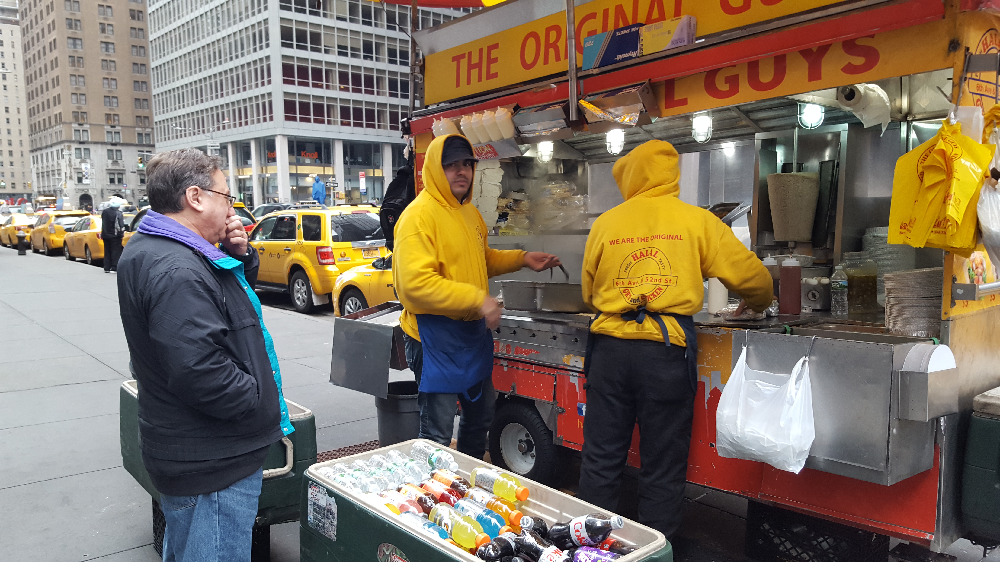
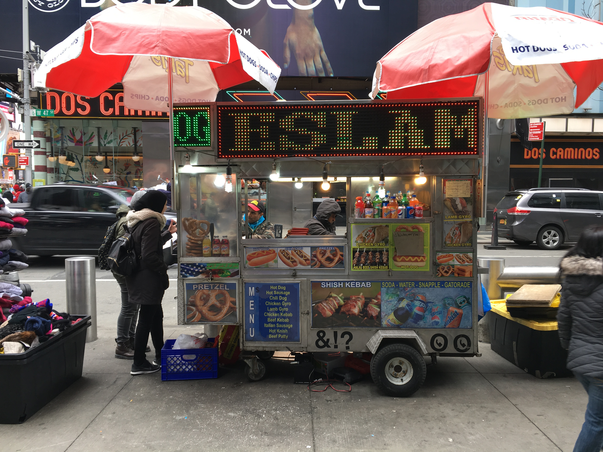
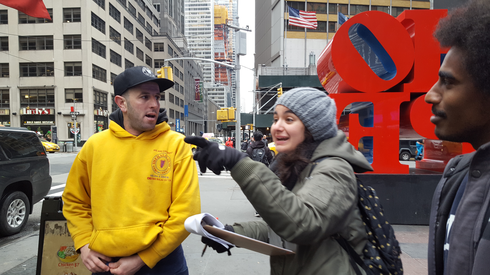
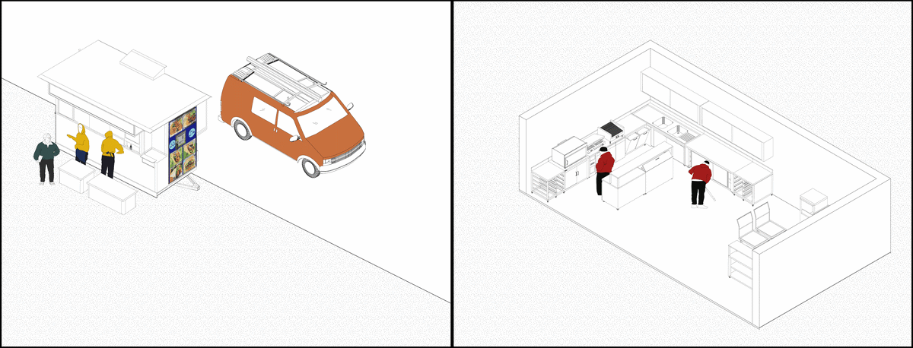

Introduction
Halal food carts have become a staple of the New York streetscape. Their presence on the streets of New York is no longer a novelty: they have become so inconspicuous in the urban context that it seems they have been there forever. It was therefore surprising for us to find out that unlike the quintessential hotdog cart, halal food carts have only been around since 1999. The small range of dishes has evolved into its own cuisine, offered referred to as "halal food" in the United States. Operated mostly by Arab speaking vendors and preparing food of Arab origin Halal food carts presented a rich field of investigation into Conflict Urbanism and Language Justice in New York: as Arabic language speakers ourselves, our initial interest stemmed from the conflicts and difficulties vendors would run into operating within a predominantly English speaking environment.
Our project focused in on the language conflict that arises in an operation run by predominantly Arabic speaking employees communicating with a largely English speaking clientele. We wanted to understand the role language plays in determining the standing of employees, the business opportunities available for vendors and the difficulties they face negotiating regulatory landscapes. Additionally, while Arabic is perceived as a monolithic language, in reality there are a variety of dialects in the Arabic-speaking world. So diverse that speakers of some are barely intelligible to speakers of others.
Foodcarts in the New York Streetscape
On the streetscape of New York, halal food carts perhaps stand out the most to Arab speakers. Within the context of signage, advertising a cultural icon such as the word halal “حلال” is an anomaly. Our research was interested in the inevitable conflicts that would arise from the interaction between vendors translating the content and nature of the halal cuisine to an English speaking population. Another of our interests was how language differences, whether it be English speaking proficiency or different Arabic dialects played out within the operation of a food cart.
Our research therefore focused on interviewing a number of halal food cart vendors, asking questions about their daily exchanges with customers, their English speaking abilities and how that affects their performance within the food carts.
Methodology
The interviewed food cart vendors were all of Egyptian origin with the exception of one vendor from Algeria. The questions were aimed at establishing a number of facts that would help us gain a clear understanding of the daily experience and located mainly in midtown Manhattan.
The questions for our interviewees, which were mostly asked by Marwah in her native Egyptian dialect, were:
+ Do you speak Arabic? + Where are you from? + When did you come to America? To New York? + How did you get this job? + Where is the food prepared? + What is your typical day? + How did you learn English? + What is your (Arabic) dialect? + Do you like this spot? Have you worked in any others? + Is this cart connected to a restaurant? + Who owns the food truck? + Who are your customers? + What makes a strong market?We interviewed a total of 7 food cart operators, their responsibilities ranging from manning the grill, to recruiting workers, to managing the entire operation. It became obvious to us that a number of language interactions were taking place within the food cart and between food cart and customers.
Halal in Midtown Manhattan
The most prominent of these language operations was the hierarchy that organizes the work within the food cart. This was directly linked to the workers’ English speaking proficiency. Workers would either work the grill and stock the food or deal directly with customers. It became obvious that these tasks rarely overlap. Employees with better English-speaking ability dealt directly with customers and translated the orders requested for the grill worker. They were the de facto managers of the food cart, in charge of most managerial tasks. These workers tended to be more educated than their counterparts even though they shared the same backgrounds. .

This hierarchy is pronounced on the food cart between 52nd and 53rd street on 6th Ave and on the one on the North West corner of 47th and Broadway. In this first case the food cart, run by cousins from the same town in the north of Egypt (Banhaa, بنها), was registered under the company name “The Original Guys.” Bahaa, the younger of the two operators, had spent a longer time in the US (8 years), was a college graduate from Egypt and had spent a considerable time on food carts at this spot. His cousin (who did not disclose his name) was older and had spent considerably less time in the US (2 years). Bahaa was in charge of receiving orders from customers and relaying them to his cousin who worked the grill. During this transaction Bahaa would perform a number of linguistic operations, particularly code-switching. This allowed him to communicate to his cousin certain specifics of the food order while also being able to complete the financial transaction with the paying customer.

The second example was the halal food cart on the North West corner of 47th and Broadway. The operators of this cart were also Egyptians and had developed an operational hierarchy similar to that of “The Original Guys”. The younger man, college educated and trained as an accountant, ran the main food operations of the cart. He would receive orders from clients, process payments and give orders to his colleague regarding stock changes or grill tasks. His cart assistant, an elderly gentleman who had been in the United States for two years and had low English proficiency, was lower level employee.
Translanguaging and Code-Switching
While interviewing the food cart vendors we were able to make note of how vendors negotiate the linguistic conflicts during the selling of halal food. An interesting example was the vendor Salman who worked the food cart at the intersection of 53rd street and Broadway. Originally from Algeria, Salman had learnt to speak Arabic, French and Spanish in his home country. He learned English when he came to America a few years ago. Although his Arabic dialect is Algerian, Salman could, drawing on his entire linguistic repetoire, convey the contents of a client's order to the grill worker. He is an expert at translanguaging, or integrating his languages to best express himself. He is also skilled at code-switching, and keeping his langauges separate based on who he is speaking to. Finally, he engages in borrowing by using a second language for “technical” terms; “Chicken over rice” is a halal food cart invention, hence its English name even when speaking in Arabic.
He flawlessly integrated English, Arabic, and the Egyptian Dialect together. This ability positioned Salman as the vendor in charge of his own cart and the point person for communicating with clients.
Hierarchies in the Kitchen

Our findings relating to how language abilities affect the employee hierarchies within the food cart prompted us to look into whether this is replicated in the main halal food cart kitchen in Astoria. The kitchen was the main operation area for the Halal Guys food carts and supplies food for all 6 carts owned by the operation. Inside the kitchen we conducted interviews with the general manager to find out how language conflicts manifest themselves in that environment.
The Halal Guys kitchen originally employed a large number of workers from diverse backgrounds, most of whom were from Latin America, but also Egyptians, Algerians, and Tunisians. Egyptians we met usually call Latin Americans “the Spanish”, referring to the language they speak. Workers in the main kitchen are not required to be fluent in English. They are required instead to have just enough fluency to communicate with workers who speak different languages with the bilingual Egyptian boss. However workers at the food carts have to be fluent in English so as to communicate effectively with clients. This effectively places food cart vendors on a higher standing than that of kitchen workers. Thus, another tier is added to the operation with food carts managers on top, grill workers below and kitchen workers at the bottom.
Egyptian Dialect as Lingua Franca
Most recently, Halal Guys moved to employ a majority of Egyptians in their kitchen. This has created a clear majority of workers who speak Arabic with an Egyptian dialect in the kitchen and understand each other perfectly.
Arabic speakers from different countries have had to adapt to Egyptian dialect as a “Lingua Franca” as it has dominated the kitchen operation. This difficulty often means that workers unable to speak with that dialect are employed in jobs where the communication is not a priority, for example truck drivers, cleaners etc. More skilled workers like Salman, who are capable of speaking multiple languages and are fluent in speaking the egyptian dialect are promoted to working at the food carts.
This video demonstrates recordings of Translanguaging and code-switching by food cart vendors during the daily transaction with clients ordering "Chicken over rice". This was chosen as a baseline for comparison between vendors' dialects.

Conclusions
The halal food cart sits at the intersection of a number of networks, their mobile nature a good indicator of how these networks are manifested in the urban context. The effect of the linguistic conflicts are felt in the entire hierarchy of employment in the halal food operation in job positions and promotions. The ability to navigate customer service and administrative tasks is predicated on ability to speak English. That said, Halal Food Carts still act as an linguistic signifier, making their own distinctly Arabic contribution to New York City’s streetscape.
Abubakr Ali
MSAAD, 2017, Architect
Marwah Garib
MSUD, 2017, Architect
Mayssa Jallad
MSHP, 2017, Architect